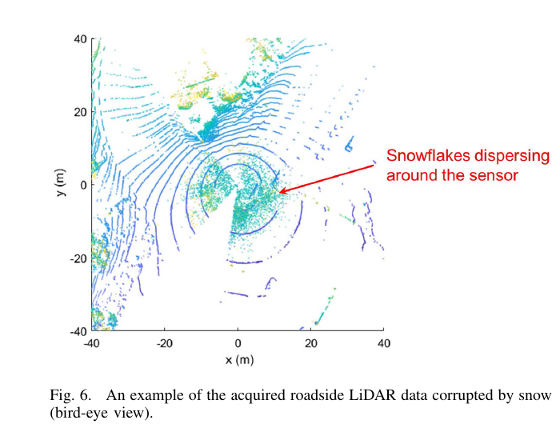
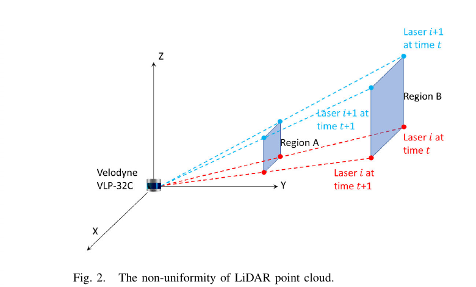
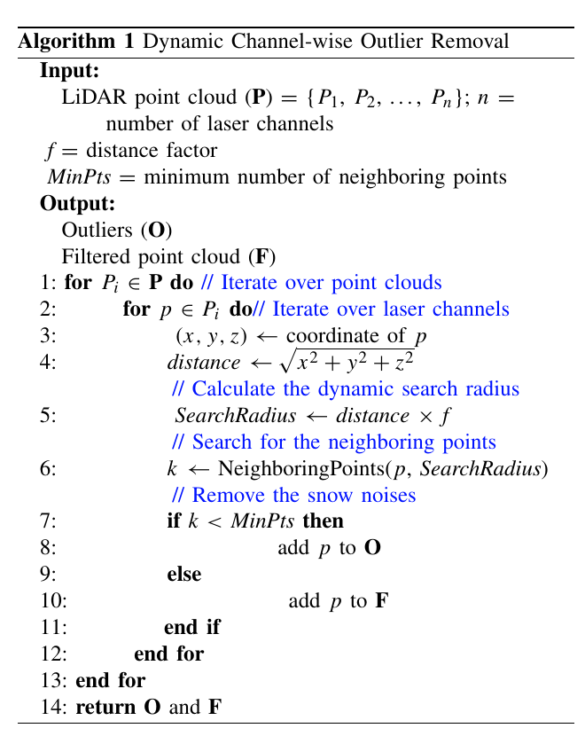
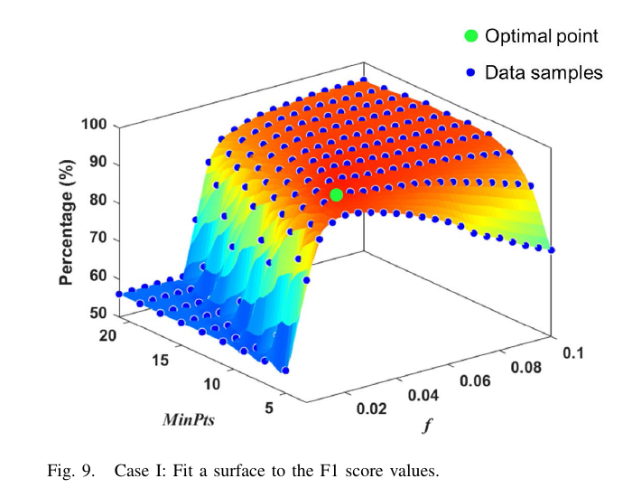
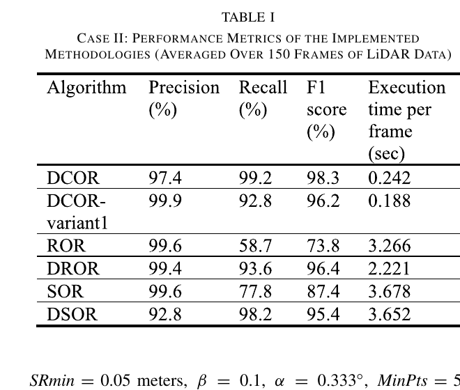
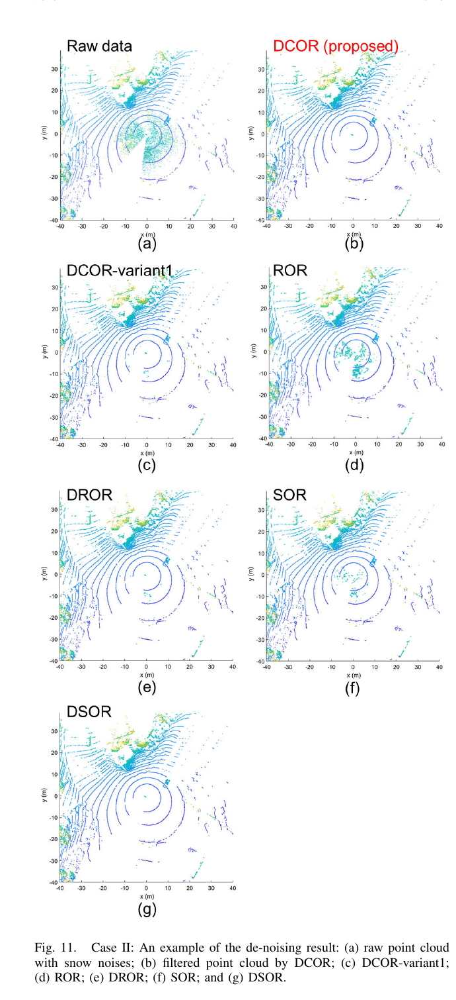

Robotics Research Reader · Stage 1
DCOR: Dynamic Channel-Wise Outlier Removal to De-Noise LiDAR Data Corrupted by Snow
材料覆盖范围：完整阅读当前 PDF 的摘要、引言、相关工作、方法、实验、结论、图表与参考文献范围，并视觉核对本页嵌入的原图裁剪。原文件为
离线交付说明：本报告采用 HTML + 同目录
DCOR_ Dynamic Channel-Wise Outlier Removal to De-Noise LiDAR Data Corrupted by Snow.pdf。本页严格限于 Stage 1：只还原论文故事线，不读取代码，不用第三方解读补写。离线交付说明：本报告采用 HTML + 同目录
images/ 的相对路径打包；移动或保存时需保留两者的相对目录结构。页面不依赖外部脚本、CDN 或远程字体。一、论文一句话在做什么
概括作者针对雪花回波污染 LiDAR 点云的问题，提出 Dynamic Channel-wise Outlier Removal（DCOR）：在每个激光通道内，用随点到传感器距离线性变化的搜索半径统计邻点数，以删除孤立雪点，并希望兼顾去雪准确率与计算效率。 （Abstract；Sec. I 末段；Sec. III-C；PDF pp. 1–5）
二、Research Problem
具体问题：从恶劣雪天采集的 LiDAR 点云中消除由雪花反射造成的噪声点。 （Abstract；Sec. I 第 2 段；PDF p. 1）
场景：自动驾驶与路侧交通感知中的 3D LiDAR；实验数据来自美国内华达州 Reno 的道路交叉口强降雪。 （Sec. I 第 1–2 段；Sec. IV-A；Fig. 5；PDF pp. 1, 6–7）
重要性：雪花会反向散射激光，使点云质量下降；这类干扰必须在后续交通目标识别、安全评估和决策之前消除。 （Sec. I 第 2 段；Sec. V 第 1 段；PDF pp. 1, 10）
后果：噪声会降低数据质量，并可能在交通目标识别中造成 false detections。 （Abstract；PDF p. 1）

三、Existing Methods & Gap
| 作者讨论的方法 | 原本怎么解决 | 作者指出的不足及其影响 |
|---|---|---|
| 多模态数据融合 | 融合 radar、RGB 等来源，通过跨域特征相关性降低单一数据源的不确定性。 | 开发和维护多传感器平台通常耗时且昂贵。 （Sec. I 第 3 段；PDF p. 1） |
| 2D median / Gaussian filtering | 把 3D LiDAR 表示为深度图或强度图，再应用图像平滑滤波。 | 不是为开放 3D 空间的离群点设计；稀疏点云中去雪效果不足，还会平滑关键边缘。 （Sec. I 第 3 段；Sec. II 2D-based 段；PDF pp. 1–2） |
| SOR | 计算每点与 k 近邻的平均距离，用全局均值和标准差得到固定阈值。 | 全局阈值不考虑 LiDAR 点云的非均匀分布。 （Sec. II “Statistical Outlier Removal”；Eq. (1)；PDF pp. 2–3） |
| ROR | 在固定搜索半径内计数邻点，邻点少于阈值即判为离群点。 | 固定半径不考虑点云随距离变化的非均匀性，因此作者援引既有研究称其去雪表现会恶化。 （Sec. II “Radius Outlier Removal”；PDF p. 3） |
| DROR / DSOR | 分别让 ROR 的搜索半径或 SOR 的距离阈值随点到传感器的距离变化。 | 作者未把两者说成失效方法；本文进一步指出它们仍过滤整个点云，而 DCOR 希望以通道处理降低维度、解耦竖直轴雪噪声。 （Sec. II DROR/DSOR；Sec. III-C；PDF pp. 3–5） |
作者在引言中把研究缺口表述为：针对雪污染 LiDAR 的研究仍不充分，还需在真实强降雪数据上继续提升去噪准确率和效率。 （Sec. I 第 3 段末；PDF p. 1）
四、Core Observation / Insight
- 原始观察
点到传感器越远，同样角分辨率覆盖的区域越大，点密度随距离增加而降低。原文依据
Fig. 2 以 Region B > Region A 示意远处覆盖更大区域。如何引出算法
搜索半径应随点到传感器的距离变化。 （Sec. III-B；Fig. 2；Eqs. (6)–(7)；PDF pp. 4, 6） - 原始观察
车辆等前景是相邻点密集的大点簇；雪花噪声是散布在传感器周围的孤立点。原文依据
Sec. III-C 明确对比两类几何形态，Fig. 6 展示实测雪点聚集于近距离。如何引出算法
给定半径内邻点数低于 MinPts 时，把该点标为离群点。 （Sec. III-C；Fig. 6；PDF pp. 4–5, 7） - 原始观察
同一激光通道内的点共享固定 elevation angle 等属性。原文依据
作者说明 VLP-32C 的 32 个通道具有各自固定的仰角。如何引出算法
逐通道处理可降低维度、解耦竖直轴雪噪声。 （Sec. III-A；Fig. 1；Sec. III-C；PDF pp. 3–5）

五、Method：只看宏观逻辑
Input：按 n 个激光通道组织的点云 P，以及 f 和 MinPts。
为什么：作者要在单通道内处理，以降低搜索维度并解耦竖直方向雪噪声。 （Sec. III-C；Algorithm 1 Input；PDF p. 5）
为什么：作者要在单通道内处理，以降低搜索维度并解耦竖直方向雪噪声。 （Sec. III-C；Algorithm 1 Input；PDF p. 5）
做了什么：逐通道、逐点读取坐标，计算点到传感器的欧氏距离。
为什么：该距离用于构造与量程成比例的动态搜索半径。 （Algorithm 1, lines 1–5；PDF p. 5）
为什么：该距离用于构造与量程成比例的动态搜索半径。 （Algorithm 1, lines 1–5；PDF p. 5）
做了什么：令
为什么：动态半径适应远处点密度下降；逐通道邻域缩小搜索空间。 （Sec. III-C；Algorithm 1, lines 5–6；Eqs. (6)–(7)；PDF pp. 5–6）
SearchRadius = distance × f，在同一通道内搜索邻点数 k。为什么：动态半径适应远处点密度下降；逐通道邻域缩小搜索空间。 （Sec. III-C；Algorithm 1, lines 5–6；Eqs. (6)–(7)；PDF pp. 5–6）
做了什么：若 k < MinPts，把点加入离群集合 O；否则加入过滤后点云 F。
为什么：作者以“雪点孤立、前景点成簇”的几何差异作为判别基础。 （Sec. III-C；Algorithm 1, lines 7–10；PDF pp. 4–5）
为什么：作者以“雪点孤立、前景点成簇”的几何差异作为判别基础。 （Sec. III-C；Algorithm 1, lines 7–10；PDF pp. 4–5）
Output：返回 O 和 F。
为什么：论文未明确解释论文未为同时返回两个集合给出额外原因。 （Algorithm 1, line 14；PDF p. 5）
为什么：论文未明确解释论文未为同时返回两个集合给出额外原因。 （Algorithm 1, line 14；PDF p. 5）

概括相比 DROR/DSOR，核心变化是邻域搜索在单个 laser channel 内完成；相对固定半径 ROR，半径又按
distance × f 调整。 （Sec. III-C；Algorithm 1；PDF p. 5）六、Contributions
- 提出 DCOR：不同于逐个处理整个点云的两种 state-of-the-art 方法，DCOR 逐通道处理，以降低数据维度、解耦竖直轴雪噪声；与两种 state-of-the-art 方法的比较报告了准确率和效率优势。 （Sec. I contributions 第 1 项；PDF p. 2） 类别：Method + Experiment
- 通过理论推导讨论 f 与 MinPts 的物理意义和影响，为后续类似研究与应用提供先验认识。 （Sec. I contributions 第 2 项；Sec. III-C；PDF pp. 2, 5–6） 类别：Modeling / Insight
七、Experiments
| Dataset | Reno 路口强降雪下的 150 帧 VLP-32C 点云；初始标签由作者既有 DBSCAN 去噪算法产生，再由受训人员检查和修正为 ground truth。 （Sec. IV-A；Figs. 5–6；PDF pp. 6–7） |
|---|---|
| 与哪些方法比较 | DCOR-variant1、ROR、DROR、SOR、DSOR。 （Sec. IV-C, Case II；PDF pp. 8–9） |
| 评价指标 | Precision、Recall、F1 score，以及 execution time per frame。 （Sec. IV-B；Figs. 10；Table I；PDF pp. 7, 9） |
| 硬件/实验环境 | MATLAB 2022a；Intel Core i7-8750H @ 2.20 GHz；16 GB RAM。 （Sec. IV-C 首段；PDF p. 7） |
| 是否有消融实验 | 有控制变量比较：DCOR-variant1 与 DCOR 唯一区别是固定/动态搜索半径。 （Sec. III-C；Sec. IV-C, Case II；PDF pp. 5, 8–9） |
| 是否有参数实验 | 有；Case I 对 f=0.005…0.1（步长 0.005）与奇数 MinPts=3…21 的 200 组组合做 grid search。 （Sec. IV-C, Case I；Eqs. (12)–(13)；Figs. 7–9；PDF pp. 7–8） |
| 是否有定性实验 | 有；Fig. 11 展示一帧重雪点云的六种过滤结果。 （Sec. IV-C；Fig. 11；PDF pp. 9–10） |
| 是否有定量实验 | 有；参数曲面、150 帧平均指标和按距离分段的雪点 Recall。 （Figs. 7–10, 12；Table I；PDF pp. 8–10） |


实验
Case I：200 组网格搜索
结果平均 F1 在 MinPts=5、f=0.025 时达到峰值；较大的 f 提高 Precision、降低 Recall，较大的 MinPts 使检测更激进。
作者据此得出的结论作者据此确定后续实验所用参数，并强调两个参数具有耦合影响。
来源Sec. IV-C, Case I；Figs. 7–9；PDF p. 8
实验
Case II：六方法定量比较
结果DCOR 的 Precision/Recall/F1/单帧时间为 97.4%/99.2%/98.3%/0.242 s；DROR 为 99.4%/93.6%/96.4%/2.221 s，DSOR 为 92.8%/98.2%/95.4%/3.652 s。
作者据此得出的结论作者认为 DCOR 相对两种 state-of-the-art 方法在 F1 和效率上更优。
来源Sec. IV-C, Case II，第 2、6 点；Table I；PDF p. 9
实验
DCOR 与 DCOR-variant1 控制变量比较
结果variant1 用固定 0.5 m 半径，F1 为 96.2%；DCOR 用动态半径，F1 为 98.3%，提升 2.1 个百分点；variant1 更快（0.188 s vs. 0.242 s）。
作者据此得出的结论作者据此认为动态搜索半径改善了综合准确率。
来源Sec. IV-C, Case II，第 1 点；Table I；PDF p. 9

实验
单帧定性去雪比较
结果直接观察ROR 和 SOR 的传感器周围仍有较多绿色点；DCOR、DROR、DSOR 的近场绿色点明显更少。
作者据此得出的结论作者认为 DCOR、DROR、DSOR 优于其余方法，并把 ROR/SOR 的残留归因于未考虑点云非均匀性。
来源Sec. IV-C；Fig. 11；PDF pp. 9–10
实验
按距离统计 DCOR、DROR、DSOR 的雪点 Recall
结果DCOR 在 0–1 m 删除的雪点比例更高；7–13 m 内 DCOR 与 DSOR 相近，二者均高于 DROR。
作者据此得出的结论作者认为这一结果与 Table I 的总体 Recall 一致。
来源Sec. IV-C 末段；Fig. 12；PDF p. 10
八、Limitations
作者明确承认的 limitation
最优 f 与 MinPts 通过 grid search 获得；作者明确称这种方法 straightforward but time-consuming，并指出需要更有效的参数调节策略来改善效率与鲁棒性。 （Sec. V 末段；PDF p. 11）
从实验结果中直接可见，但作者没有明确称为 limitation 的现象
直接观察DCOR 的 97.4% Precision 低于 variant1、ROR、DROR 与 SOR；0.242 s 的单帧时间也高于 variant1 的 0.188 s。 （Table I；PDF p. 9）
直接观察定量实验只覆盖同一 Reno 路口、同一 VLP-32C 采集的 150 帧强降雪数据；论文没有报告第二地点或第二种传感器的定量结果。这里只描述覆盖范围，不据此断言泛化失败。 （Sec. IV-A；PDF pp. 6–7）
九、Future Work / Research Implications
后续需要开发比 grid search 更有效的参数调节策略，以提高所提方法的效率和鲁棒性。 （Sec. V 末段；PDF p. 11）
十、论文逻辑链
概括现实问题：强雪回波污染 LiDAR，影响后续识别、安全评估与决策。 （Abstract；Sec. V；PDF pp. 1, 10）
概括现有方法：多传感器融合，或用 2D/3D 阈值与邻域过滤预处理。 （Sec. I；Sec. II；PDF pp. 1–3）
概括为什么不够：平台成本高，2D 平滑不适合开放 3D 离群点，固定阈值/半径不适应点云非均匀性。 （Sec. I；Sec. II；PDF pp. 1–3）
概括关键现象：点密度随距离下降；雪点孤立而前景成簇；同通道点共享激光几何属性。 （Sec. III-A–C；Figs. 1–2；PDF pp. 3–5）
概括核心思想：在每个通道内，以距离成比例的半径做邻域计数。 （Sec. III-C；Algorithm 1；PDF p. 5）
概括具体方法：逐通道计算
distance × f，邻点数小于 MinPts 即判离群。 （Algorithm 1；PDF p. 5）概括实验验证：150 帧实测数据上的 200 组参数搜索与六方法比较。 （Sec. IV；Figs. 7–12；Table I；PDF pp. 7–10）
概括结论：作者报告 98.3% F1 和 0.242 s/帧，并认为准确率与效率优于 DROR/DSOR。 （Sec. V；Table I；PDF pp. 9, 11）
十一、第一遍阅读结束后，我应该记住的东西
- 概括解决的是强雪回波对路侧/自动驾驶 LiDAR 点云的污染。 （Abstract；Sec. I；PDF p. 1）
- 概括核心 gap 是通用过滤器未充分适应点云随距离变化的非均匀性，作者还希望提升真实强雪数据上的准确率与效率。 （Sec. I；Sec. II；PDF pp. 1–3）
- 概括最关键 insight 是远处点更稀疏、雪点更孤立，因此邻域尺度应随距离变化。 （Sec. III-B–C；Fig. 2；PDF pp. 4–5）
- 概括最核心变化是把动态半径邻点统计限制在单个激光通道内。 （Sec. III-C；Algorithm 1；PDF p. 5）
- 概括最重要结果是 98.3% F1、0.242 s/帧；F1 高于 DROR/DSOR，但 Precision 和绝对最快速度并非表中第一。 （Table I；PDF p. 9）
十二、暂时不要深入的内容
- 概括VLP-32C firing pattern 与水平角分辨率推导。 （Sec. III-A；Fig. 1；Eq. (4)；PDF pp. 3–4）
- 概括f 与 MinPts 的物理意义、理论上下界和现实遮挡修正。 （Sec. III-C；Figs. 3–4；Eqs. (5)–(8)；PDF pp. 5–6）
- 概括Algorithm 1 的邻域搜索实现与精确复杂度；论文给出伪代码，但没有复杂度证明。 （Algorithm 1；PDF p. 5）
- 概括各基线参数为何最优；作者说明依据 prior knowledge 和 preliminary studies，但未讨论最优选择。 （Sec. IV-C, Case II；PDF pp. 8–9）